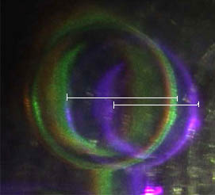
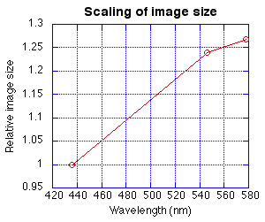
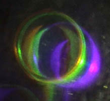
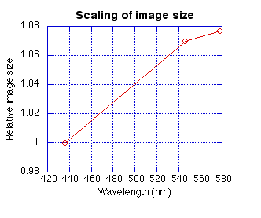

Hologram Scaling, Physics 3901, Fall 02
Experimenters: Kyle Setchel, Zhuo (Jimmy) Tan, Theresa Crider-Cox, Steve Gerber
|  | A view of the holographic image formed by a clear mercury vapor lamp was made with a digital video camera. This image is a single frame from the digital video. The diameter of the pipe in the image can be resolved for the green and orange lines, but not for the blue. For the green and blue images, a measurement of well defined features could be made as indicated by the lines on the image. In this way, relative sizes for the three wavelengths could be obtained. |
|  | Relative measurements were made of the image size for the three wavelengths of the mercury spectrum, 436, 546, and 578 nm. The measurements were made using the ruler capability in Adobe Photoshop. The relative image sizes for the three wavelengths were plotted with Kaleidograph. |
|  | This view looks sharper, and better measurements were anticipated. But the scaling factor was quite a bit less. To compare green and orange, the width of the pipe was used. For the blue and green relative scaling, the height of the pipe to the point of attachment of the supporting rod was used. |
|  | Relative measurements were made of the image size for the three wavelengths of the mercury spectrum, 436, 546, and 578 nm. The measurements were made using the ruler capability in Adobe Photoshop. The relative image sizes for the three wavelengths were plotted with Kaleidograph. |